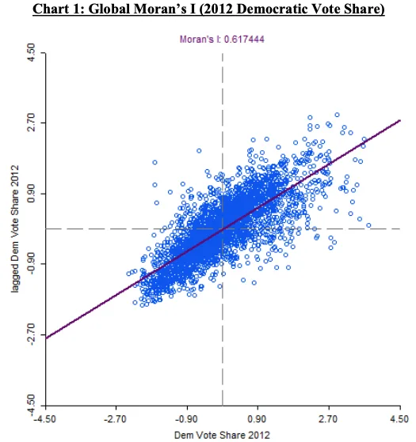
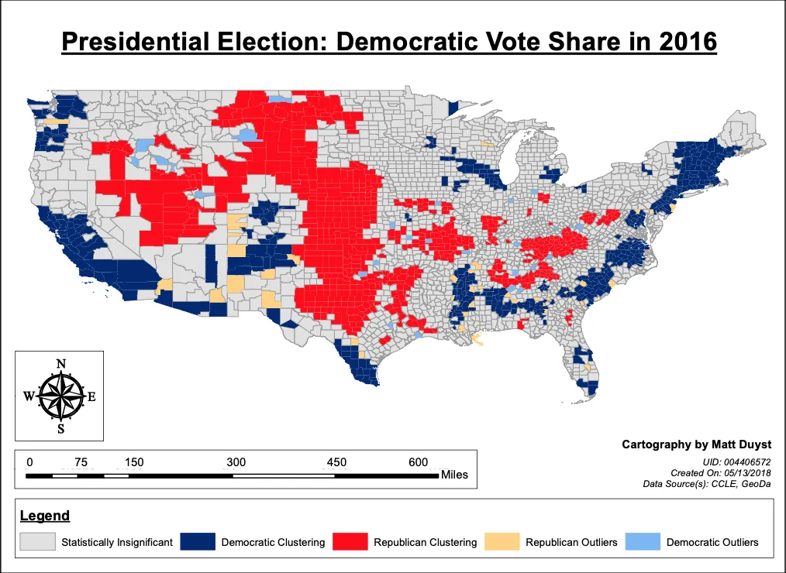
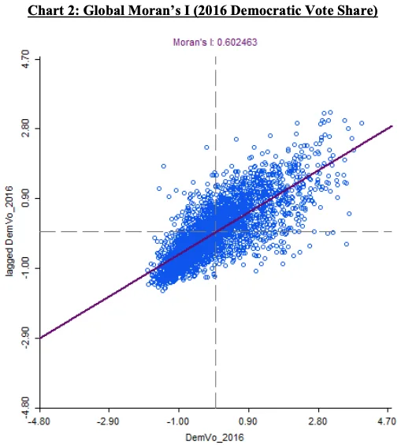
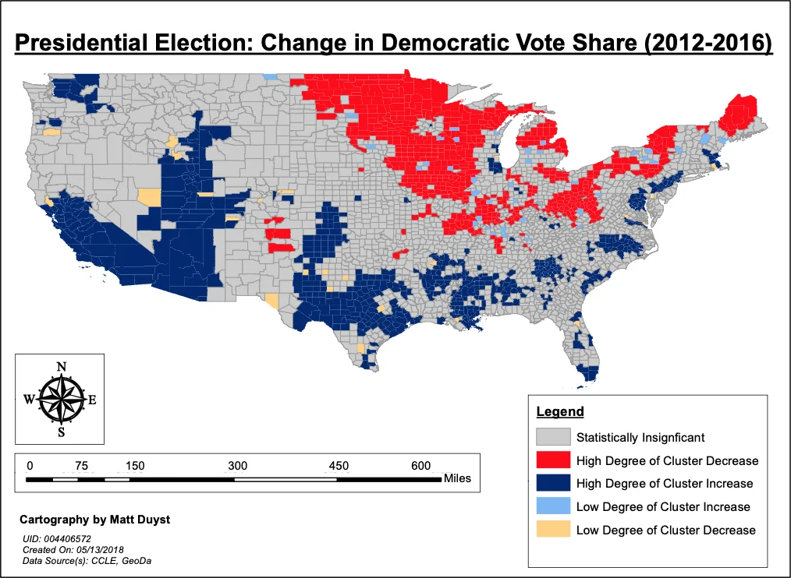
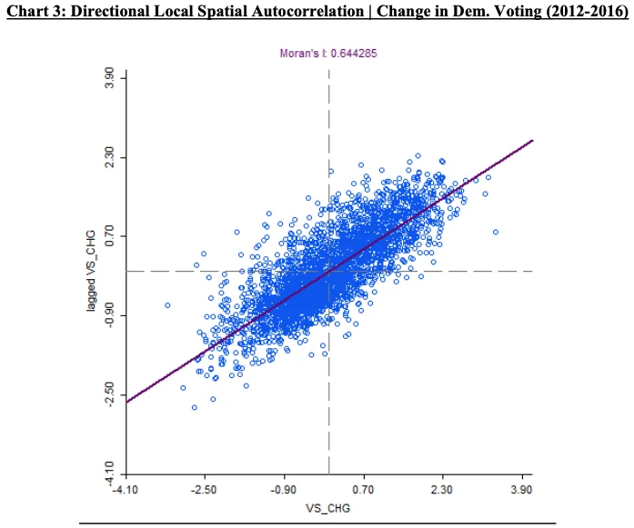

UCLA coursework, 2014 to 2018
The Spatial Dynamics of Presidential Elections: An Autocorrelation Analysis of Voter Behavior in 2012 & 2016
Abstract:
This project exemplifies an advanced method of interpolation mapping, through the lens of spatial autocorrelation between voting characteristics of the 2012 and 2016 Presidential elections. By subtracting the Democratic vote shares between the years 2012 and 2016, a change in voter behaviors is made tangible - proven by a strong, positive correlation of 0.644 produced through GeoDa (chart 3). This positive correlation denotes the influence of spatially clustered locations (counties) on voting characteristics in the United States. 64% of Democratic voting share change can be assumed from the spatial clustering of linked county surroundings.
Results:
Voter Behaviors (2012):


This clustered illustration of global county votes underscores a strong spatial autocorrelation (0.617) between voting patterns in the United States. This value was produced vis-à-vis the software GeoDa and was held by a 'First Order Queen Contiguity' basis. When comparing this value to the below chart of 2016 (0.602), a slight decrease in the spatial clustering of voting characteristics in the United States is realized.
Voter Behaviors (2016):


The emphasis of a county-level scale of vision allowed for a more nuanced analysis of spatial patterns in voting behaviors. Specifically, the voting characteristics of Democratic voters in the United States of the primary election between 2012 and 2016. The largest clustering of Democratic voting counties in 2012 are those within the states of the West Coast boundary (California and Washington), as well as counties comprising the Midwest and Northeastern divisions. 4 years later (in 2016), the clustering of Democratic voters was reduced in both the Midwest region and Northeast regions. Paradoxically, states like California and Washington received an increase in Democratic votes in the year 2016.
Change in Voter Behaviors:


By analyzing the percent change in Democratic voting share characteristics between 2012 to 2016, a consensus can be drawn: The greatest clustering of Democratic vote shares are almost entirely comprised of the US coastlines and the South West. This is interesting due to the nature of Southern states being predominately Republican. And yet, although the Democratic party most certainly gains from this clustering between coastlines and the Southern region, it equally lost votes in the Northeastern and Midwest boundaries.